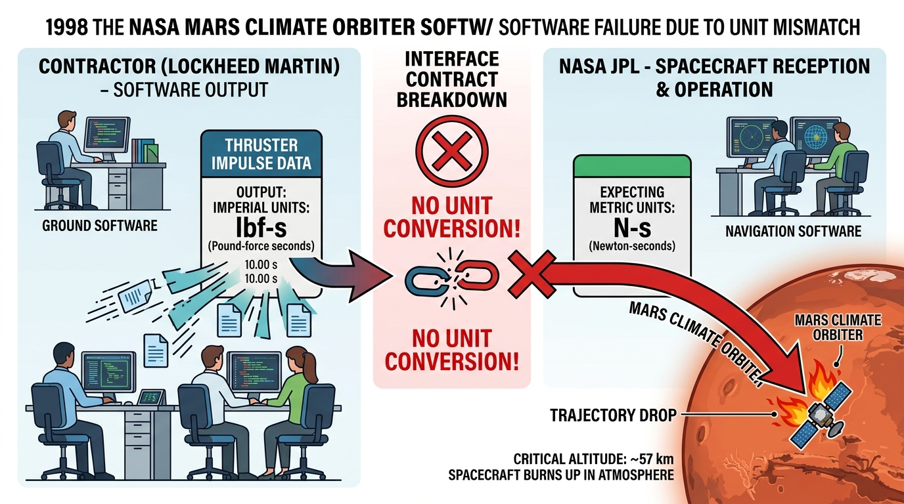
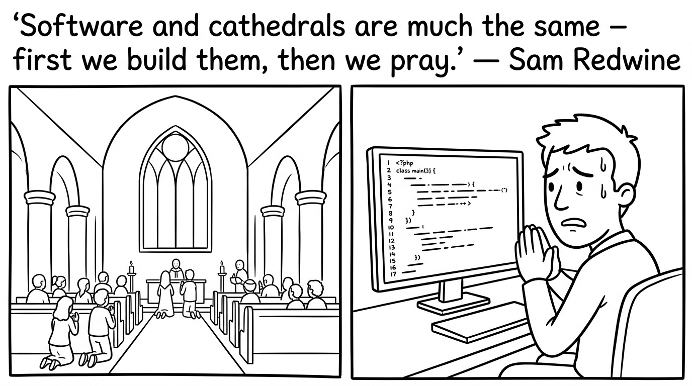
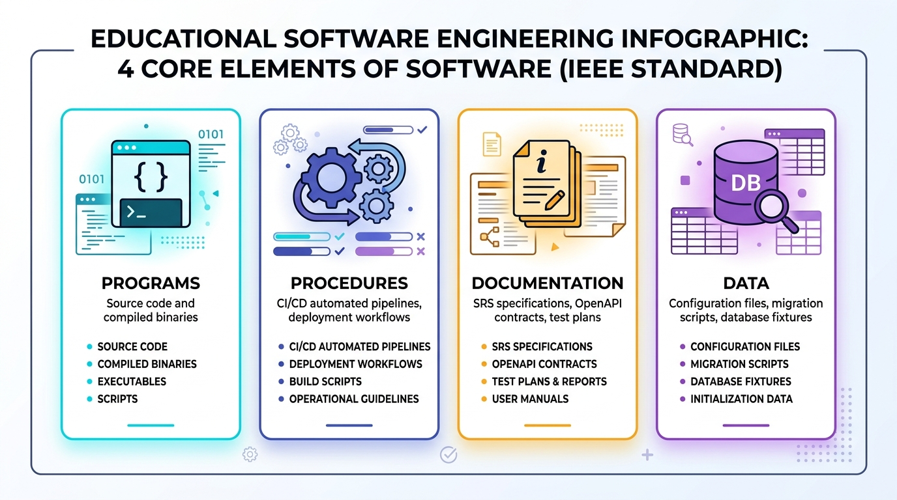
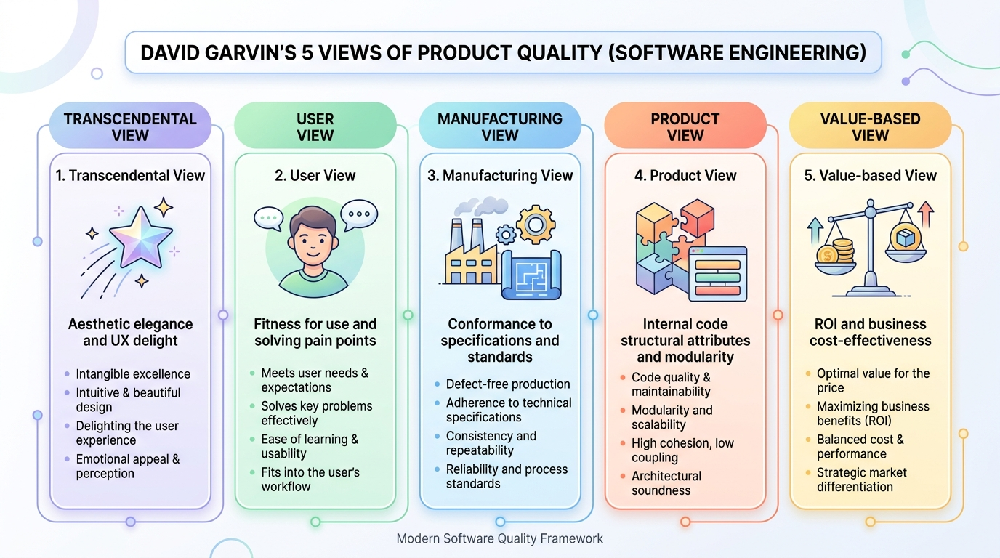
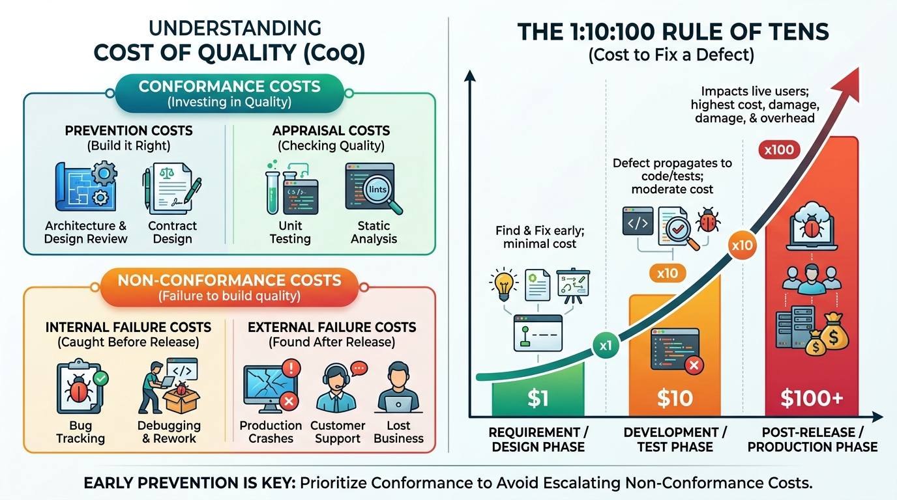
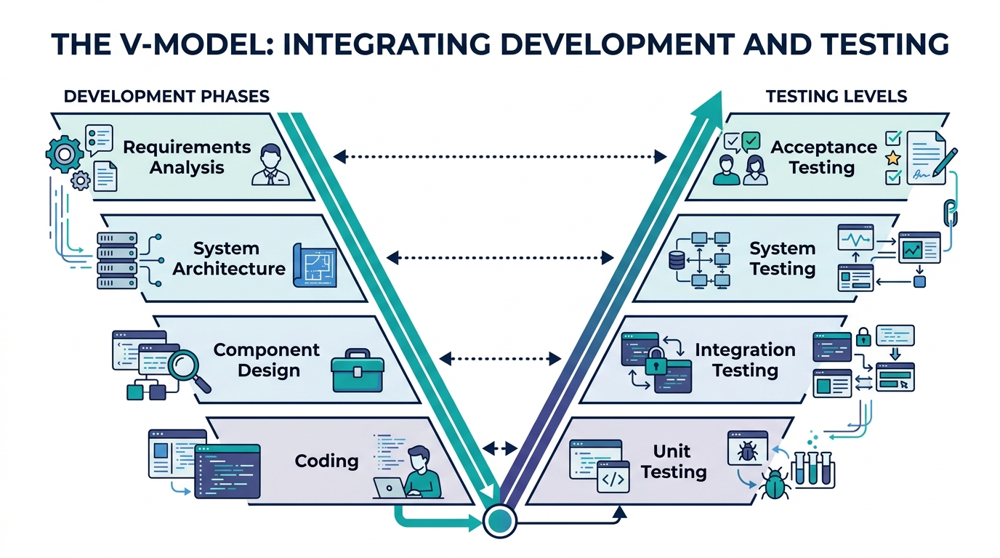
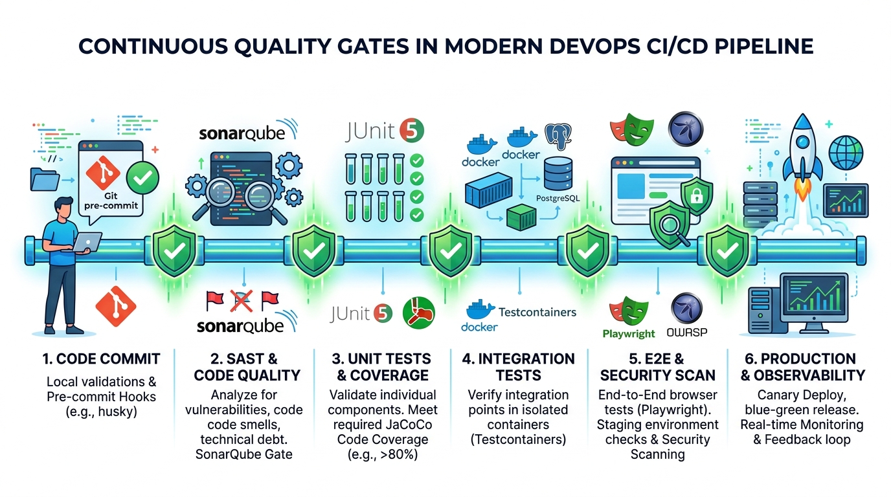
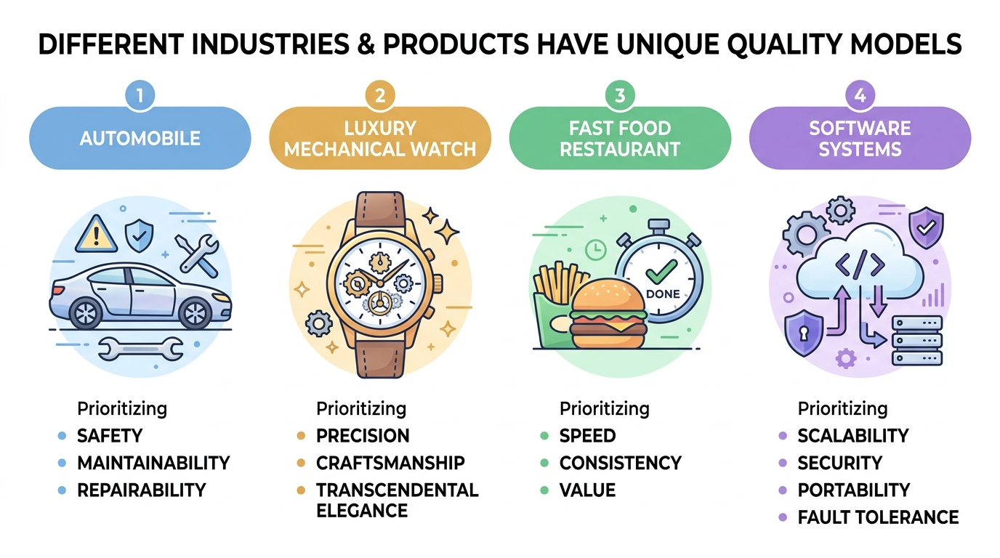
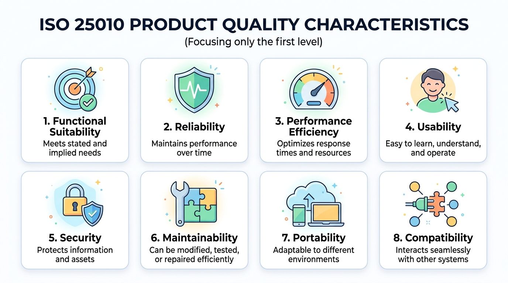

授課教師：薛念林 教授
大家都知道「物質不滅定律」；身為資工系學生，我們更熟悉「Bug 不滅定律」。 在 2026 年，寫出一段程式碼只要問 AI 3 秒鐘；但要證明這段程式碼在生產環境不會搞垮公司，可能要花上 3 個月。
軟體既能造福人類，亦能造成毀滅性災難。

問題：愛國者反導彈系統（1991）在達蘭基地攔截失效的根本軟體原因為何？
A. 通訊網路中斷導致雷達無法傳送指令給飛彈發射架
B. 24-bit 時鐘暫存器的浮點捨入誤差在連續運行 100 小時後累加達 0.33 秒
C. 程式碼發生記憶體洩漏（Memory Leak）導致作業系統當機
D. 雷達演算法誤將美軍戰機辨識為敵方飛毛腿飛彈
主題：真實世界的軟體失敗案例與省思
討論任務：與鄰近同學組成雙人組，分享一件曾遇過、聽過或搜尋到的真實軟體事故（如 2024 CrowdStrike 藍屏、Knight Capital 交易虧損、搶票/遊戲當機等）。
討論重點：
在 2026 年，寫出一段程式碼只要問 AI 3 秒鐘； 但要證明這段程式碼不會搞垮公司，可能要花上 3 個月。
crypto-validator
pip install

問題：在評估生成式 AI 對專案品質的影響時，軟體工程度量研究常使用 「程式碼流失率（Code Churn）」 作為關鍵指標。關於 Code Churn 的定義及其在 AI 時代所反映的品質現象，下列敘述何者最為精準？
A. 指專案跨語言遷移時因語法不相容遺失的行數比例
B. 指新 Commit 程式碼在極短時間內被刪除或重寫的比例；反映出 AI 程式碼看似快速但本質脆弱、未經深思熟慮
C. 指建置工具自動剔除死碼 (Dead Code) 的效率
D. 指自動化測試案例因版本迭代自然失效的比率
軟體四要素 ＆ David Garvin 五大品質觀點
Software (軟體): Computer programs (程式), procedures (程序), and possibly associated documentation (文件) and data (資料) pertaining to the operation of a computer system.

application.yml
30ms
哈佛商學院教授 David Garvin 指出，品質是由多重視角交織而成的立體概念：
1. 超自然觀點 (Transcendental View)：
2. 使用者觀點 (User View - Fitness for Use)：
3. 製造觀點 (Manufacturing View - Conformance)：
4. 產品觀點 (Product View - Architecture)：
5. 價值觀點 (Value-based View - ROI)：

/
互動提問：
你覺得哪一個觀點是最重要的品質指標？請寫下來。
超自然觀點 (Transcendental View)
使用者觀點 (User View)
製造觀點 (Manufacturing View)
產品觀點 (Product View)
價值觀點 (Value-based View)
問題：某專案團隊開發的電商 App 完全符合合約規格書上的每一條需求（製造觀點合格），但因為底層架構高度耦合且完全沒有寫單元測試，半年後客戶想新增一個促銷功能時，工程團隊發現必須重寫整個系統。這代表該軟體在 Garvin 的哪一個品質觀點上嚴重不及格？
A. 產品觀點 (Product View)
B. 製造觀點 (Manufacturing View)
C. 法律合約觀點 (Legal Contract View)
D. 超自然觀點 (Transcendental View)
V&V 驗證與確認、品質成本 (CoQ) 與測試左移
Verification (驗證)： Are we building the product right?（我們是否有正確地建造軟體？） 確保產出物符合設定的規格（程式碼是否符合設計圖、單元測試是否符合規格）。
Validation (確認)： Are we building the right product?（我們建造的是否是正確的軟體？） 確保軟體真正滿足使用者的真實業務需求（驗收測試、易用性測試、臨床/現場試用）。
問題：某軟體團隊為醫院開發急診分流系統，嚴格按照規格書完成實作，單元測試與 Code Review 皆 100% 通過無 Bug。但實際上線在急診室臨床試用時，醫護人員發現分流操作流程完全不符合急救現場真實節奏，無法在實務中使用。根據定義，此系統在下列哪一項做得很好，但在哪一項嚴重失敗？
A. Verification 做得很好，但 Validation 嚴重失敗
B. Validation 做得很好，但 Verification 嚴重失敗
C. Verification 與 Validation 兩者皆成功
D. Verification 與 Validation 兩者皆失敗

V 模型對稱性與 DevOps CI/CD 連續品質門檻


問題：請將下列 8 項軟體工程活動，依照**「實際執行生命週期順序（從最初需求分析到最終驗收）」**由先至後排列出正確順序：
ISO 25010 八大產品品質特性與情境連環戰


「如果無法度量它，就無法改善它。」—— Tom DeMarco
八大選項池：
A. 功能適合性
B. 可靠性
C. 效能效率
D. 易用性
E. 安全性
F. 可維護性
G. 可移植性
H. 相容性
第 1 題【吐鈔卡死危機】：ATM 提款扣款成功並印明細，但吐鈔口卡死分文未出。
第 2 題【雙十一流量海嘯】：午夜 50 萬人搶購，CPU 飆到 100%，API 延遲暴增至 40 秒。
第 3 題【致命的相鄰按鈕】：「重啟伺服器」與「永久銷毀主機」按鈕相鄰且顏色相同無二次防呆。
第 4 題【牽一髮動全身的義大利麵】：新增會員「暱稱」欄位引發 8 個模組連鎖編譯錯誤。
第 5 題【斷電重啟秒級自癒】：DB 突發斷電，備援機制 3 秒內自動 Failover 重放 WAL 零遺失。
第 6 題【跨系統托運單格式打架】：電商與物流 API 日期協定不符（YYYY-MM-DD vs DD/MM/YYYY）導致批次失敗。
YYYY-MM-DD
DD/MM/YYYY
第 7 題【URL 改個數字看光他人隱私】：將 URL userId=1001 改為 1002，直接秀出他人信用卡號。
userId=1001
1002
第 8 題【Mac 開發很順，推上 Linux 容器全掛】：macOS 測試正常，上 Linux 因大小寫嚴格區分找不到檔案。
第 9 題【地下室離線暫存與自動重送】：外送員進地下室 App 自動離線快取，回地面 5G 自動重送。
第 10 題【容器映像檔一鍵秒級部署】：Docker 映像檔在 AWS、GCP 或 K8s 皆能在 10 秒內一鍵拉起。
遊戲任務：
請透過手機或筆電進入線上互動介面，針對 10 個日常軟體工程事件進行 ISO 25010 八大特性配對！
考驗你的架構直覺與品質標準掌握度！
每題均對應真實開發與維運的慘痛教訓或高可用實踐。
課堂思考與實務討論
0.1
100000.0
各題答案與關鍵解析
1 ➔ 2 ➔ 3 ➔ 4 ➔ 5 ➔ 6 ➔ 7 ➔ 8
id: sqa-ch01-ccq1
id: sqa-ch01-pair1
id: sqa-ch01-ccq2
id: sqa-ch01-wordcloud1
id: sqa-ch01-ccq3
id: sqa-ch01-ccq4
id: sqa-ch01-ordering1
id: sqa-ch01-game